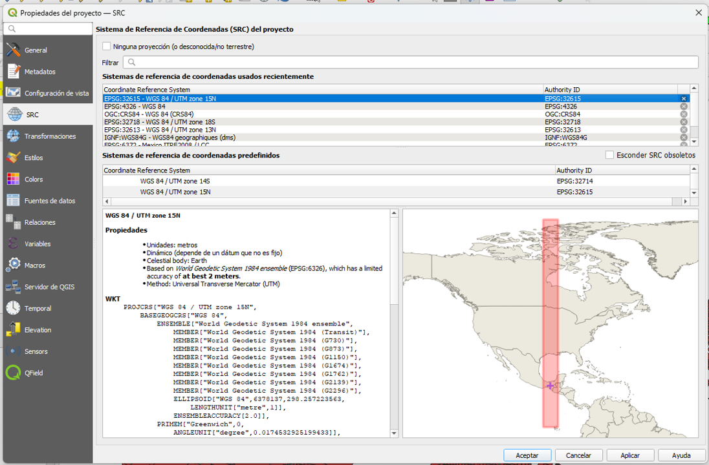
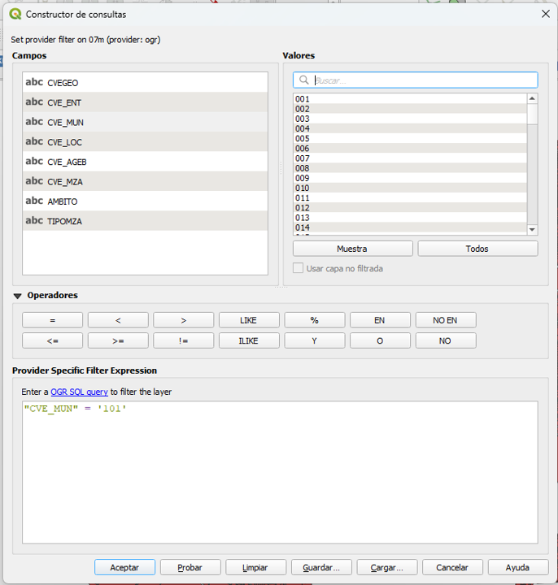
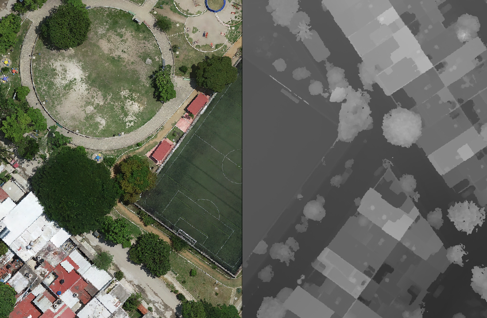

Repaso de las fuentes de datos oficiales, filtros de atributos y modelos espaciales.
Descargamos el Marco Geoestadístico desde el portal del INEGI para trabajar con límites oficiales. Para asegurar la precisión métrica en nuestra región, configuramos nuestro proyecto con el código correspondiente a Chiapas: EPSG: 32615 (UTM Zona 15N).

Para no sobrecargar el sistema con las manzanas de todo el estado, utilizamos la tabla de atributos para aislar nuestra área de interés mediante la siguiente sentencia SQL:
"CVE_MUN" = '101'

Cargamos y diferenciamos los insumos base para ingeniería:

Demuestra que dominas los conceptos clave del Día 1.